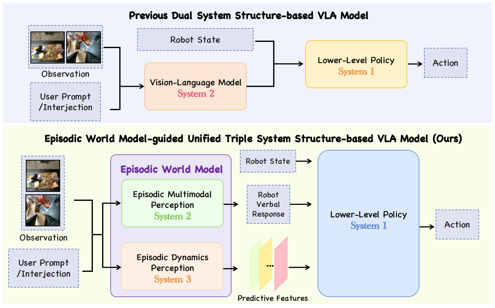
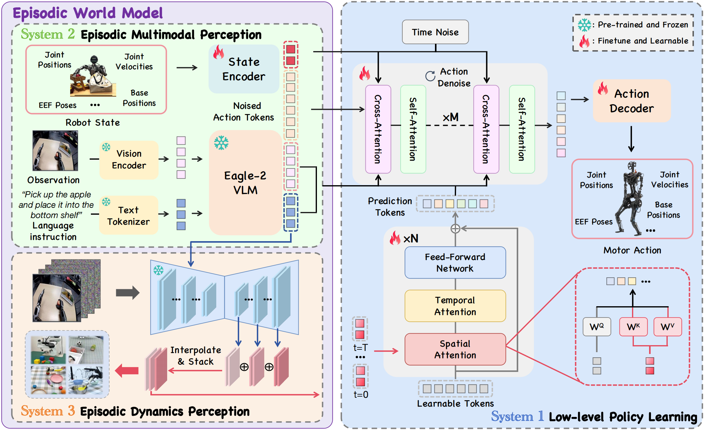
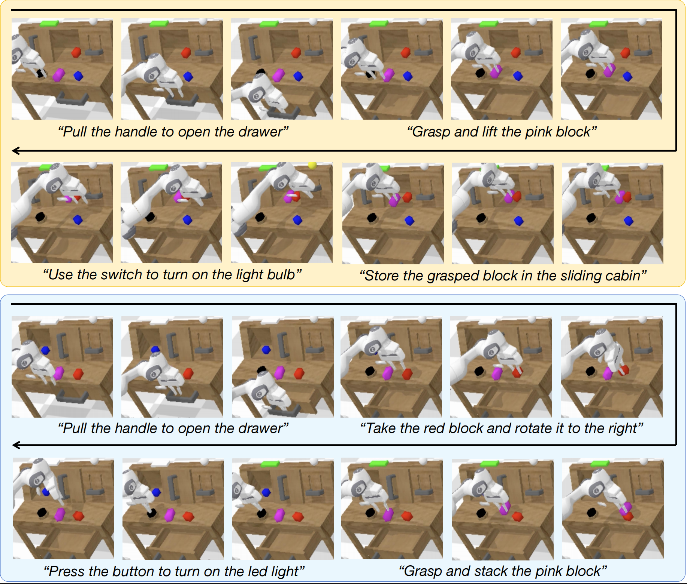
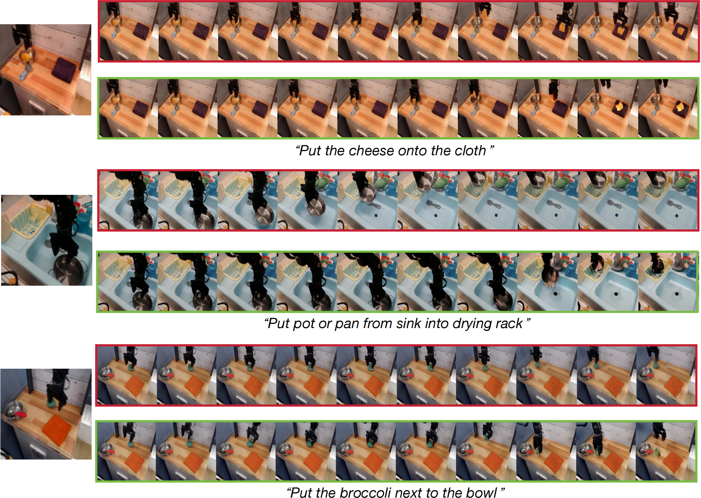

Recent advances in vision–language models (VLMs) have enabled robots to follow open-ended instructions and demonstrate impressive commonsense reasoning. However, current vision–language–action (VLA) frameworks primarily rely on static representations and limited temporal context, restricting agents to short-horizon, reactive behaviors and hindering robust generalization in dynamic embodied environments. Inspired by cognitive neuroscience theories of episodic memory, we are, to our knowledge, among the first to introduce a formalized episodic world model in VLA, enabling embodied robots to accumulate, recall, and predict sequential experiences. As an instantiation of this concept, our unified TriVLA realizes the episodic world model through a triple-system architecture: integrating multimodal grounding from a pretrained VLM (System 2) and temporally rich dynamics perception from a video diffusion model (System 3). This enables the agent to accumulate and recall sequential experiences, interpret current contexts, and predict future environmental evolution. Guided by episodic representations that span both the past and anticipated future, the downstream policy (System 1) generates coherent, context-aware action sequences through flow-matching and cross-modal attention mechanisms. Experimental results show that TriVLA operates efficiently at ~36 Hz and consistently outperforms baseline models on standard benchmarks and challenging real-world manipulation tasks. It demonstrates strong long-horizon planning and open-ended intent understanding, showcasing the advantages of episodic world model-inspired reasoning for robust, generalizable robot intelligence.

Comparison between dual-system architectures and our episodic world model-guided TriVLA. TriVLA implements the episodic world model using a triple-system architecture. In contrast, previous dual-system methods relied on static representations and limited temporal context, which restricted agents to short-horizon, reactive behaviors in dynamic environments.

The pipeline of TriVLA. TriVLA is a unified Vision-Language-Action framework built on a triple-system paradigm. System 2 employs a pre-trained Eagle-2 VLM for episodic multimodal perception, while System 3 utilizes a general-purpose VDM to model episodic dynamics and sequential changes. Together, these modules form a joint episodic world model with rich, temporally extended representations. System 1 serves as the policy module, applying action flow-matching to integrate all outputs along with robot state and action history.

